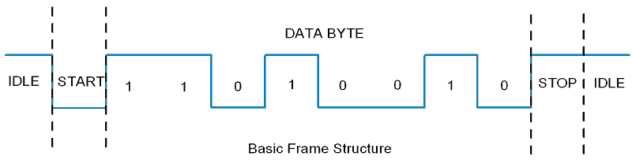

Serial communication means transfer data bit by bit serially at a time, where as in parallel communication, the number of bits that can be transferred at a time depends upon the number of data lines available for communication.
Two methods of serial communication are
8051 has built in UART with RXD (serial data receive pin) and TXD (serial data transmit pin) on PORT3.0 and PORT3.1 respectively.
Asynchronous serial communication is widely used for byte oriented transmission.
Frame structure in Asynchronous communication:
In asynchronous serial communication frame, first START bit followed by data byte and at last STOP bit, forms a 10-bit frame. Sometimes last bit is also used as parity bit.

8051 Serial Frame Structure
Data transmission rate is measured in bits per second (bps). In binary system it is also called as baud rate (number of signal changes per second). Standard baud rates supported are 1200, 2400, 4800, 19200, 38400, 57600, and 115200. Normally most of the time 9600 bps is used when speed is not a big issue.
Interface standard

8051 Serial Interface
Baud Rate calculation:

Division factor to achieve different baud rates
Baud Rate | TH1 (Hex) |
|---|---|
9600 | FD |
4800 | FA |
2400 | F4 |
1200 | E8 |
SBUF: Serial Buffer Register
This is the serial communication data register used to transmit or receive data through it.

SCON: Serial Control Register
Serial control register SCON is used to set serial communication operation modes. Also it is used to control transmit and receive operations.

Bit 7:6 - SM0:SM1: Serial Mode Specifier
Mode | SM0 | SM1 | Mode |
|---|---|---|---|
0 | 0 | 0 | 1/12 of Osc frequency shift register mode fixed baud rate |
1 | 0 | 1 | 8-bit UART with timer 1 determined baud rate |
2 | 1 | 0 | 9-bit UART with 1/32 of Osc fixed baud rate |
3 | 1 | 1 | 9-bit UART with timer 1 determined baud rate |
Normally mode-1 (SM0 =0, SM1=1) is used with 8 data bits, 1 start bit and 1 stop bit.
Bit 5 - SM2: for Multiprocessor Communication
This bit enables multiprocessor communication feature in mode 2 & 3.
Bit 4 - REN: Receive Enable
1 = Receive enable
0 = Receive disable
Bit 3 - TB8: 9th Transmit Bit
This is 9th bit which is to be transmitted in mode 2 & 3 (9-bit mode)
Bit 2 - RB8: 9th Receive Bit
This is 9th received bit in mode 2 & 3 (9-bit mode), where as in mode 1, if SM2 = 0 then RB8 hold stop bit that received
Bit 1 - TI: Transmit Interrupt Flag
This bit indicates transmission is complete and gets set after transmitting the byte from buffer. Normally TI (Transmit Interrupt Flag) is set by hardware at the end of 8th bit in mode 0 and at the beginning of stop bit in other modes.
Bit 0 – RI: Receive Interrupt Flag
This bit indicates reception is complete and gets set after receiving the complete byte in buffer. Normally RI (Receive Interrupt Flag) is set by hardware in receiving mode at the end of 8th bit in mode 0 and at the stop bit receive time in other modes.
Example
Let's Program 8051 (here AT89C51) to send character data “test” serially at 9600 baud rate in mode 1
#include <reg51.h> /* Include x51 header file */
void UART_Init()
{
TMOD = 0x20; /* Timer 1, 8-bit auto reload mode */
TH1 = 0xFD; /* Load value for 9600 baud rate */
SCON = 0x50; /* Mode 1, reception enable */
TR1 = 1; /* Start timer 1 */
}
void Transmit_data(char tx_data)
{
SBUF = tx_data; /* Load char in SBUF register */
while (TI==0); /* Wait until stop bit transmit */
TI = 0; /* Clear TI flag */
}
void String(char *str)
{
int i;
for(i=0;str[i]!=0;i++) /* Send each char of string till the NULL */
{
Transmit_data(str[i]); /* Call transmit data function */
}
}
void main()
{
UART_Init(); /* UART initialize function */
String("test"); /* Transmit 'test' */
while(1);
}
8051 UART has a serial interrupt. Whenever data is transmitted or received, serial interrupt flags TI and RI are activated respectively.
8051 serial interrupt has vector address (0023H) where it can jump to serve ISR (Interrupt service routine) if global and serial interrupt is enabled.
Let's see how serial interrupt routine will be used in serial communication programming.
Programming steps
Note: For transmission and reception interrupt, same interrupt vector address is assigned, so when controller jumps to the ISR, we have to check whether it is Tx interrupt or Rx interrupt by TI and RI bits status.
Example
Let's Program 8051 (here AT89C51) to receive character data serially at 9600 baud rate in mode 1 and send received data on port 1 using serial interrupt.
#include <reg51.h> /* Include x51 header file */
void Ext_int_Init()
{
EA = 1; /* Enable global interrupt */
ES = 1; /* Enable serial interrupt */
}
void UART_Init()
{
TMOD = 0x20; /* Timer 1, 8-bit auto reload mode */
TH1 = 0xFD; /* Load value for 9600 baud rate */
SCON = 0x50; /* Mode 1, reception enable */
TR1 = 1; /* Start timer 1 */
}
void Serial_ISR() interrupt 4
{
P1 = SBUF; /* Give received data on port 1 */
RI = 0; /* Clear RI flag */
}
void main()
{
P1 = 0x00; /* Make P1 output */
Ext_int_Init(); /* Call Ext. interrupt initialize */
UART_Init();
while(1);
}